COVID 19 Information
The COVID-19 pandemic in Bangladesh is part of the worldwide pandemic of coronavirus disease 2019 (COVID-19) caused by severe acute respiratory syndrome coronavirus 2 (SARS-CoV-2). The virus was confirmed to have spread to Bangladesh in March 2020. The first three known cases were reported on 8 March 2020 by the country's epidemiology institute, IEDCR. Since then, the pandemic has spread day by day over the whole nation and the number of affected people has been increasing.
In order to protect the population, the government declared "lockdown" throughout the nation from 23 March to 30 May and prepared some necessary steps to spread awareness to keep this syndrome away from them. Infections remained low until the end of March but saw a steep rise in April. In the week ending on 11 April, new cases in Bangladesh grew by 1,155 percent, the highest in Asia, ahead of Indonesia, with 186 percent. On 6 May, cases were confirmed in all districts. Rangamati was the last district to report confirmed cases of COVID-19. On 13 June, the number of cases in Bangladesh exceeded the number of cases in China, the country where the outbreak began. Bangladesh reached two grim milestones of 160,000 cases and 2,000 deaths on 5 July and overtook France in terms of the number of cases two days later. The number of recoveries in the country exceeded the number of active cases on 12 July.
Bangladesh is the second most affected country in South Asia, after India.
Medical experts feared that not enough tests were being conducted. Newspaper reports and social media continued to report about additional deaths of patients with COVID-19 symptoms. Some of the deceased were treated at COVID-19 isolation centres at hospitals in the districts and others were denied treatment, though no tests were conducted to confirm contagion. For a long time, testing was centralised to only Institute of Epidemiology, Disease Control and Research (IEDCR) in the capital Dhaka, although patients with symptoms were reported all around the country. On 22 March, Bangladesh declared a 10-day shut down effective from 26 March to 4 April. This was later extended to 30 May.
How COVID 19 Spread
1) The air by coughing and sneezing
2) Colse personal contact, such as touching or shhaking hands
3) Touching an object or surface with the virus on it, then touching
your mouth, nose, or eyes
before washing your hand
4) rarely, fecal contamination
Common Symptoms of COVID 19
1) Fever
2) Dry Cough
3) Tiredness
4) Headache
5) Runy Nose
6) Sore Throat
Prevention of COVID 19
1) Wash your hand properly
2) Use an alcohol based hand sanitizer
3) Cover your cough or sneeze with a tissue
4) Avoid touching your eyes, nose and mouth without washing your
hand
5) Wear mask
How to wash hand properly
